CORE · 2/4
Grades + AI hints
Concept entry
- Transcript, exam session and “how am I doing”: GPA, credits, debts
- AI explains what to improve and which deadlines are close

Digital Deanery · ostrovok.store5 / 14
Цифровой деканат — a student self-service portal: every study-related thing in one window
A contest prototype, not a real university service. All data is fictional.
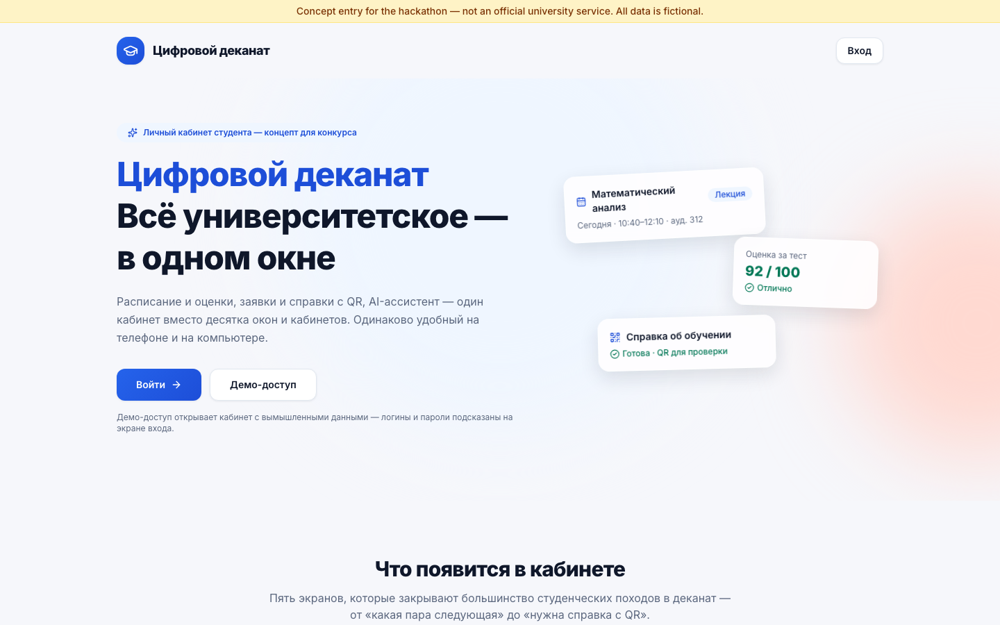
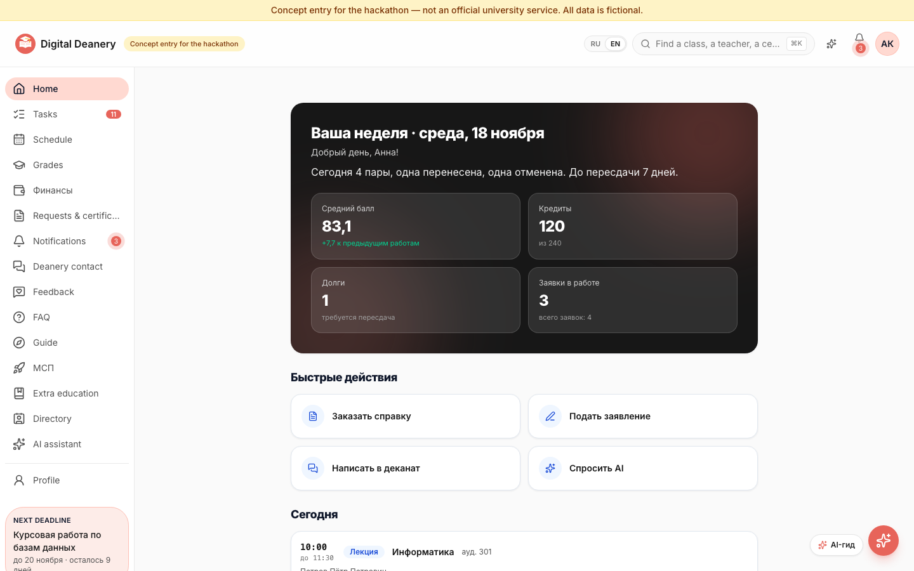
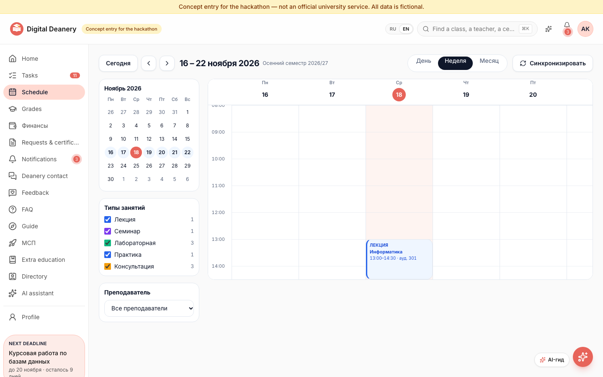
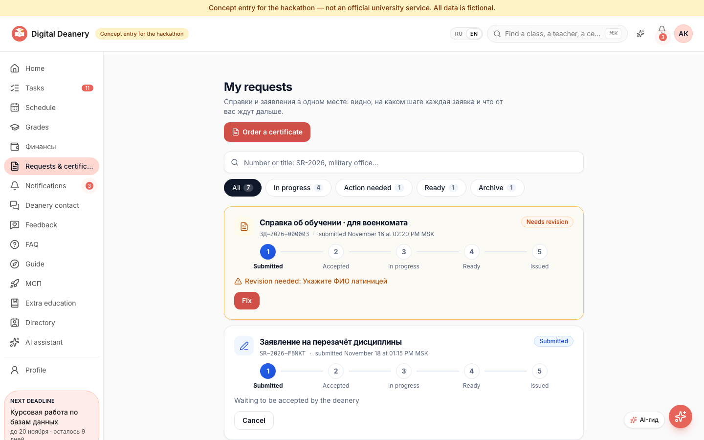
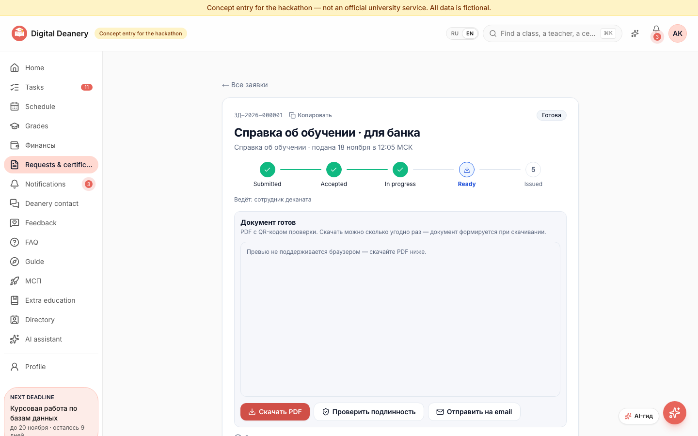
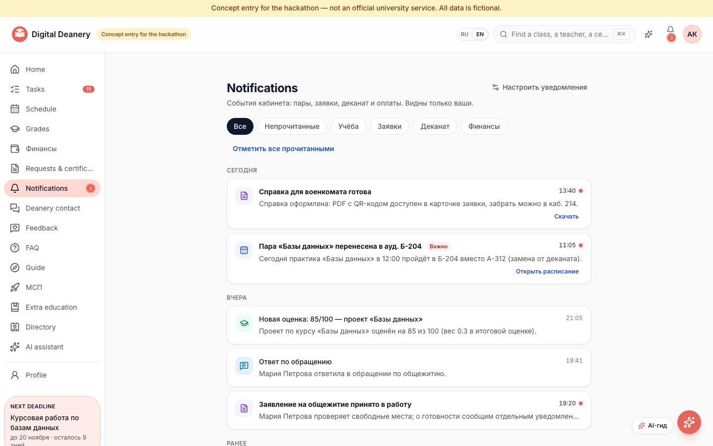
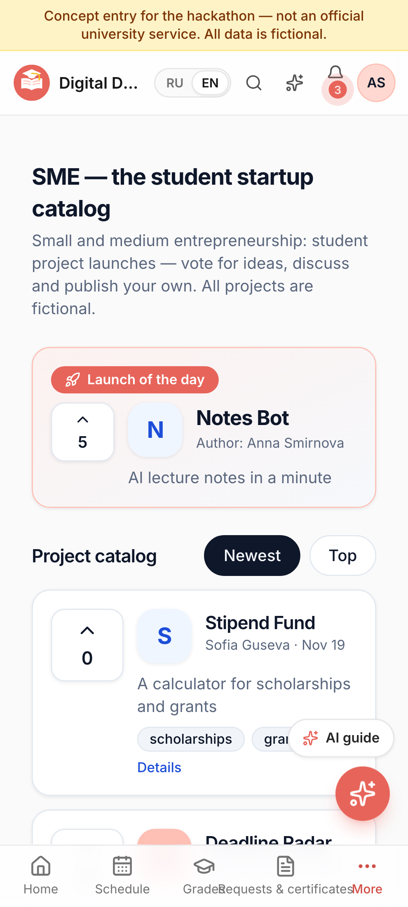
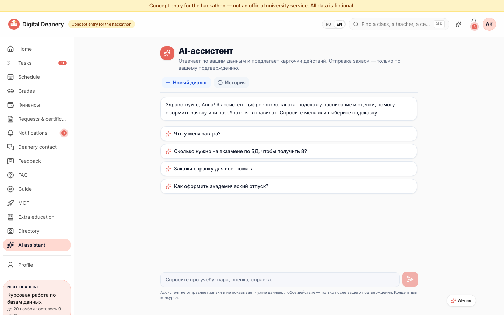
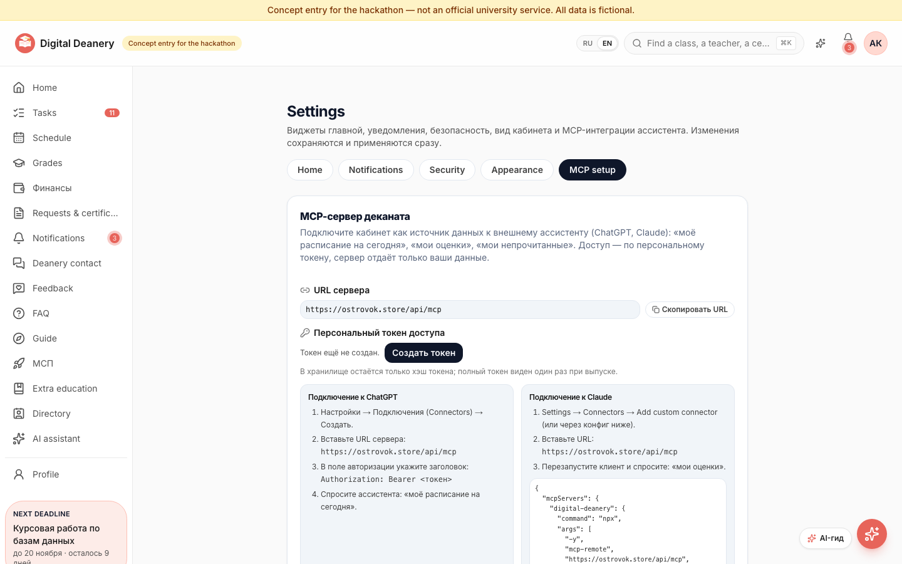
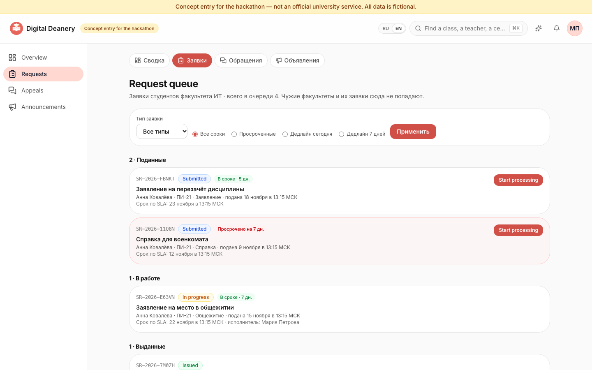
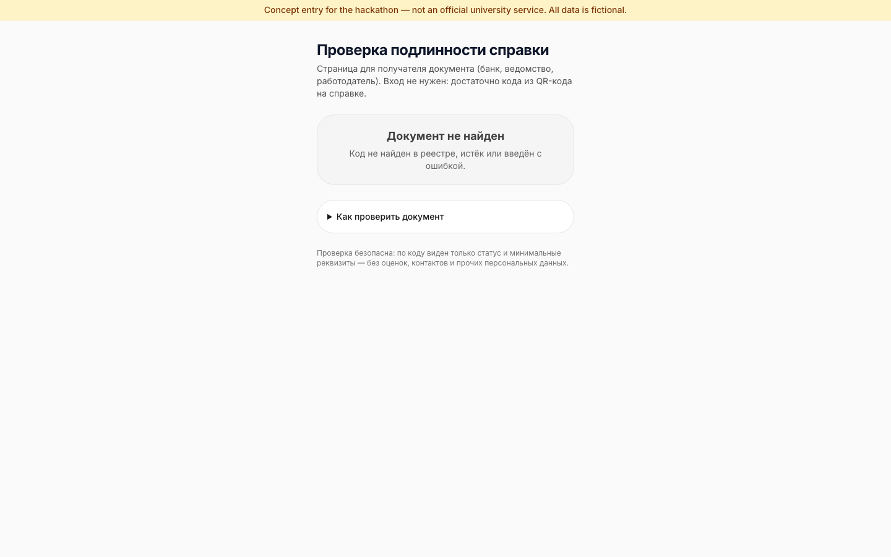